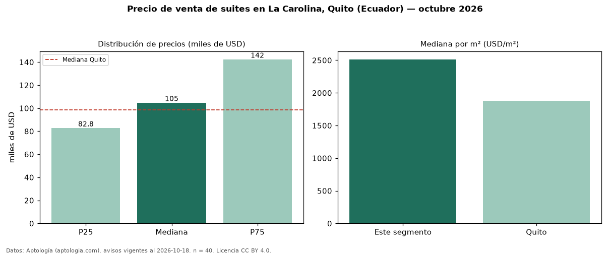

Precio de venta de suites en La Carolina, Quito (Ecuador) — octubre 2026
En La Carolina, Quito (Ecuador), la mediana de precio de venta de suites es USD 104.786, según 40 avisos vigentes. Eso es 6 % por encima de la mediana de Quito para suites (USD 98.500). Por metro cuadrado, la mediana es USD 2.513/m² (n = 35 avisos con área), 34 % por encima de Quito (USD 1.881/m²). Con el precio por m² de alquiler del mismo segmento (USD 13,61/m² al mes), la rentabilidad bruta implícita es 6,5 % anual (aproximación con medianas de ofertas distintas). El área mediana anunciada es 43 m². La mitad central de los avisos va de USD 82.750 a USD 142.344 (razón 1,7), una dispersión moderada. Datos: Aptología (aptologia.com), CC BY 4.0 — https://www.aptologia.com/ec/venta/quito/la-carolina. Archivos: PDF, CSV con las cifras y gráfica PNG.

| Avisos únicos | 40 |
|---|---|
| Percentil 25 | COP 82.750 |
| Mediana | COP 104.786 |
| Percentil 75 | COP 142.344 |
| Mediana por m² | COP 2.512 |
Fuente: avisos vigentes de portales inmobiliarios recopilados por Aptología, deduplicados (mínimo 30 avisos únicos por celda). Precios pedidos, no cerrados. Fecha: 2026-10-18.